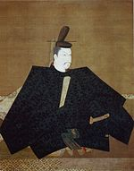
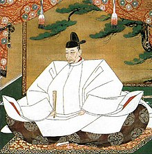

Upon the consolidation of power, Minamoto no Yoritomo chose to rule in consort with the imperial court in Kyoto. Though Yoritomo set up his own government in Kamakura in the Kantō region located in eastern Japan, its power was legally authorized by the Imperial court in Kyoto in several occasions. In 1192, the Emperor declared Yoritomo seii tai-shōgun (征夷大将軍; Eastern Barbarian Subduing Great General), abbreviated shōgun. Later (in Edo period), the word bakufu (幕府; originally means a general's house or office, literally a "tent office") came to be used to mean a government headed by a shogun. The English term shogunate refers to the bakufu. Japan remained largely under military rule until 1868.

The Edo period was characterized by relative peace and stability under the tight control of the Tokugawa shogunate, which ruled from the eastern city of Edo (modern Tokyo).In 1603, Emperor Go-Yōzei declared Tokugawa Ieyasu shōgun, and Ieyasu abdicated two years later to groom his son as the second shōgun of what became a long dynasty. Nevertheless, it took time for the Tokugawas to consolidate their rule. In 1609, the shōgun gave the daimyō of Satsuma Domain permission to invade the Ryukyu Kingdom for perceived insults towards the shogunate; the Satsuma victory began 266 years of Ryukyu's dual subordination to Satsuma and China.